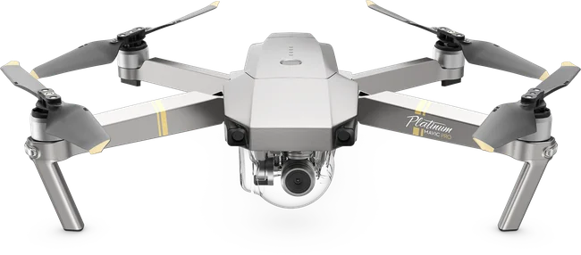

404 ERROR
Oops! Page Not Found
The page you're looking for might have been removed, had its name changed, or is temporarily unavailable.

Back to Home
Return to our homepage and explore more.
Explore Services
Discover what we have to offer.
Read Our Blog
Get the latest insights and updates.
Contact Us
We're here to help — get in touch.